Su superficie es de 357.376 km², limita con Dinamarca al norte, Austria y Suiza al sur, Polonia y La República Checa al este y Francia, Luxemburgo, Los Países Bajos y Bélgica al oeste. Al norte del país hay un relieve llano y bajo que conecta con el mar, en la zona central hay un relieve mucho más montañoso con colinas, montañas medias y bosques y en la zona sur el terreno se eleva hasta unirse con los Alpes Bávaros en la frontera con Austria.
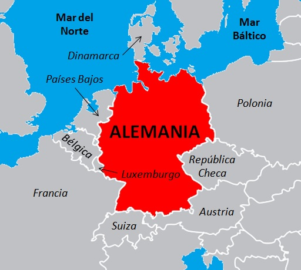
Alemania en el mapa
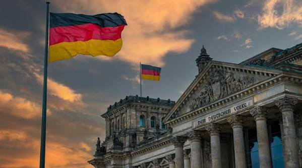
:3
Sus costumbres reflejan el valor que les dan al orden y la comunidad, las más representativas abarcan desde la vida cotidiana hasta celebraciones mundialmente conocidas. Es obligatorio quitarse el calzado de la calle antes de entrar dentro de alguna casa, dentro se anda en pantuflas o solo con medias. Al momento de comer se prefiere el agua mineral con gas (Sprudel) antes que el agua mineral sin gas. Algunas de sus fiestas y celebraciones más conocidas son:
Oktoberfest: Es la fiesta de la cerveza y se festeja cada año en Múnich. Nació en octubre de 1810 para celebrar la boda del príncipe Luis I de Baviera y Teresa de Sajonia.
Polterabend: Es una fiesta en víspera de bodas donde los invitados rompen platos de porcelana en el suelo para darle buena suerte a los novios.
Walpurgisnacht: Se celebra la noche del 30 de abril al 1 de mayo con hogueras y reuniones festivas para dar la bienvenida a la primavera.
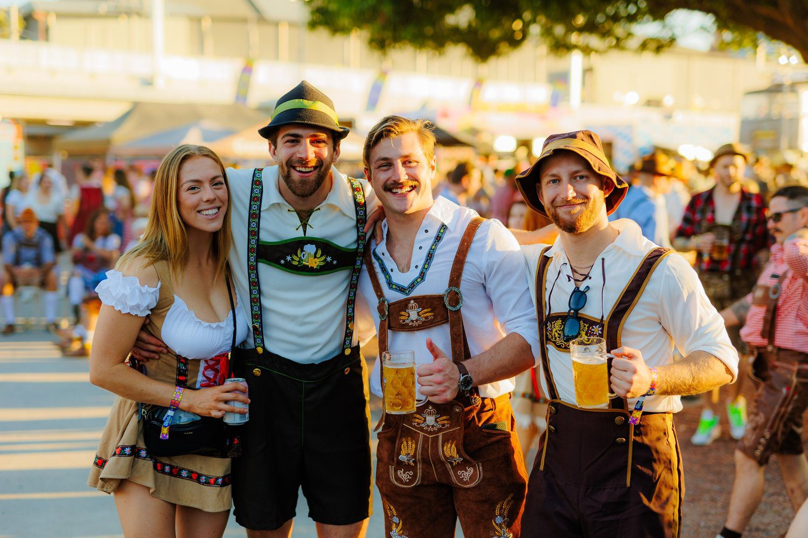
Oktoberfest
Polterabend
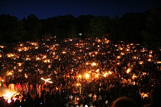
Walpurgisnacht
Sus comidas típicas se caracterizan por ser platos de carne, papas, panes artesanales y una gran variedad de salchichas. Algunas de las más conocidas son:
Wurst: las salchichas son el símbolo gastronómico del país. De la gran variedad de tipos se destacan la Bratwurst que es una salchicha a la parrilla, la Weisswurst que es la salchicha blanca de Múnich hecha de carne de ternera picada muy fina junto con especias y la Currywurst que son salchichas callejeras cortadas en rodajas con salsa de tomate y curry.
Schnitzel: es un filete de carne empanado y frito que comparte con Austria.
Schweinshaxe: carne de cerdo al horno hervida acompañada con chucrut.
Chucrut (Sauerkraut): col o repollo agrio y fermentado.
Spätzle: pastas frescas al huevo, normalmente se acompañan con queso fundido (Käsespätzle).
Sauerbraten: considerado como el plato nacional, consiste en carne marinada en vinagre y vino durante varios días, se sirve asada o en estofado.
Bretzel: también conocido como Pretzel, es un pan horneado en forma de lazo y con sal gruesa por encima.
Stollen: es un pan dulce navideño con pasas y frutos secos.
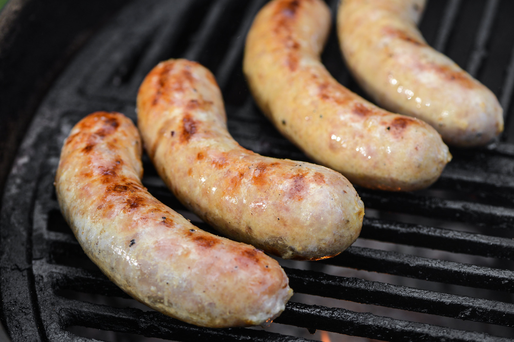
Bratwurst
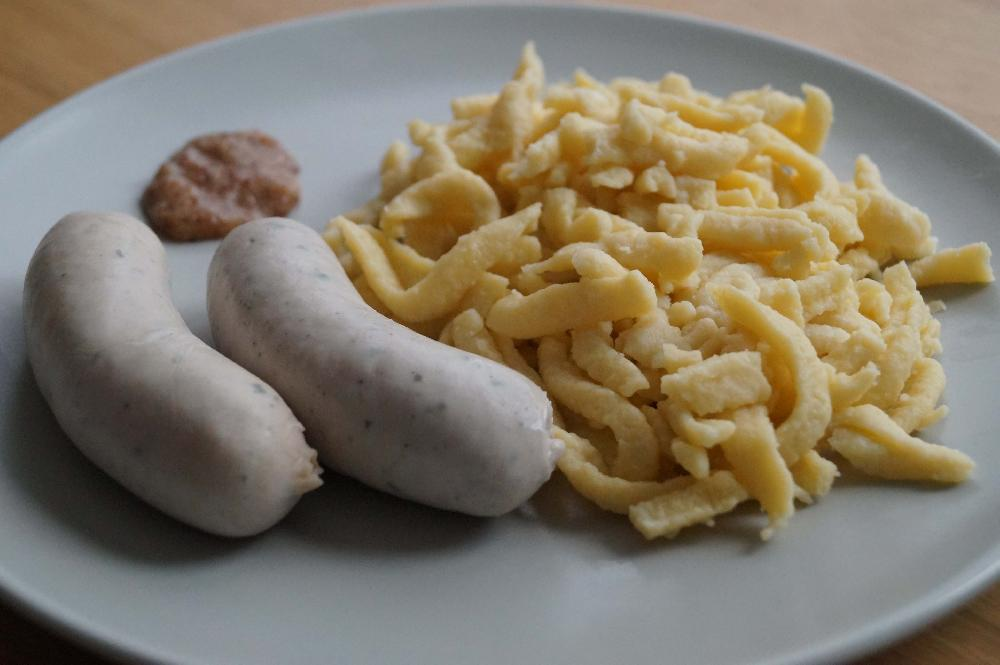
Weisswurst
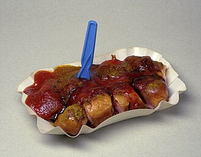
Currywurst
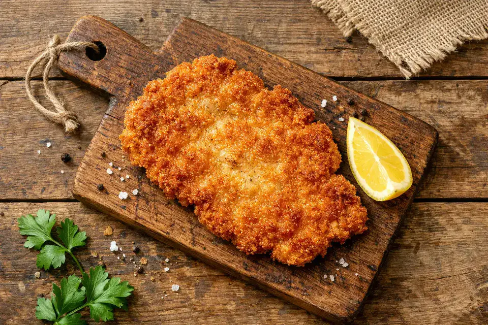
Schnitzel
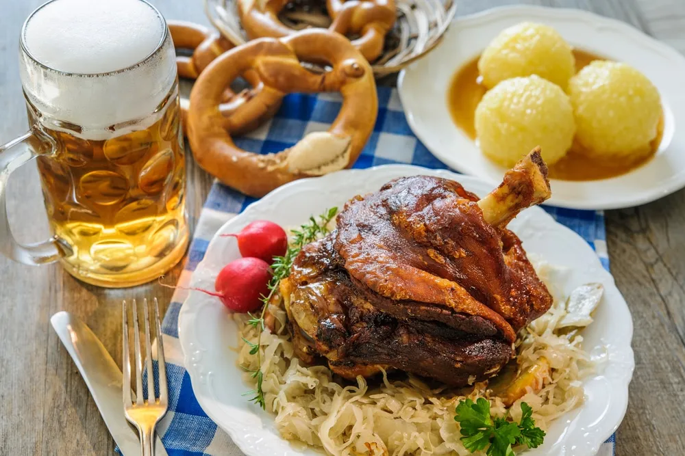
Schweinshaxe
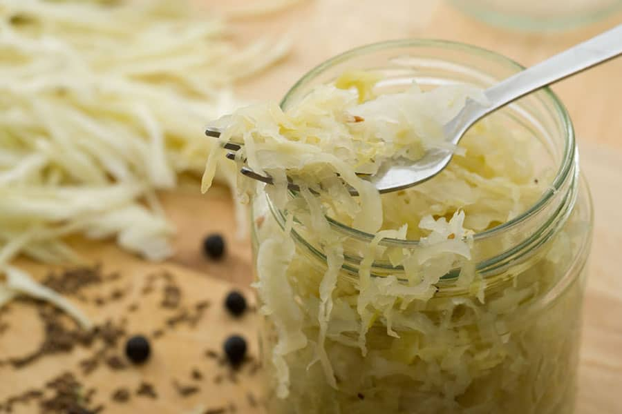
Chucrut (Sauerkraut)
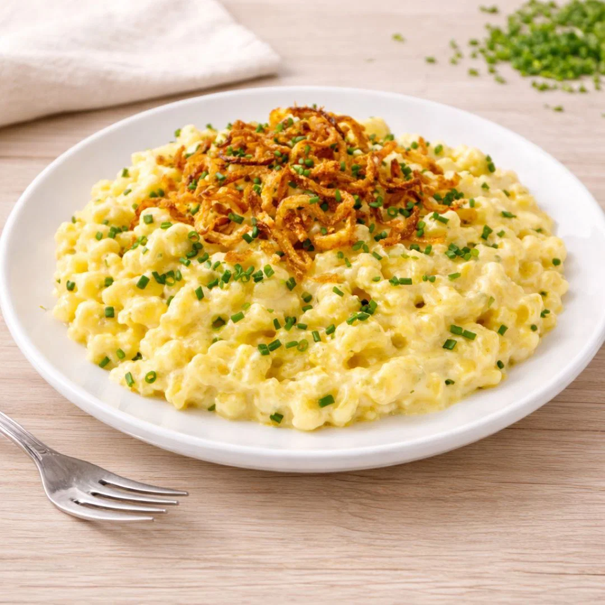
Spätzle
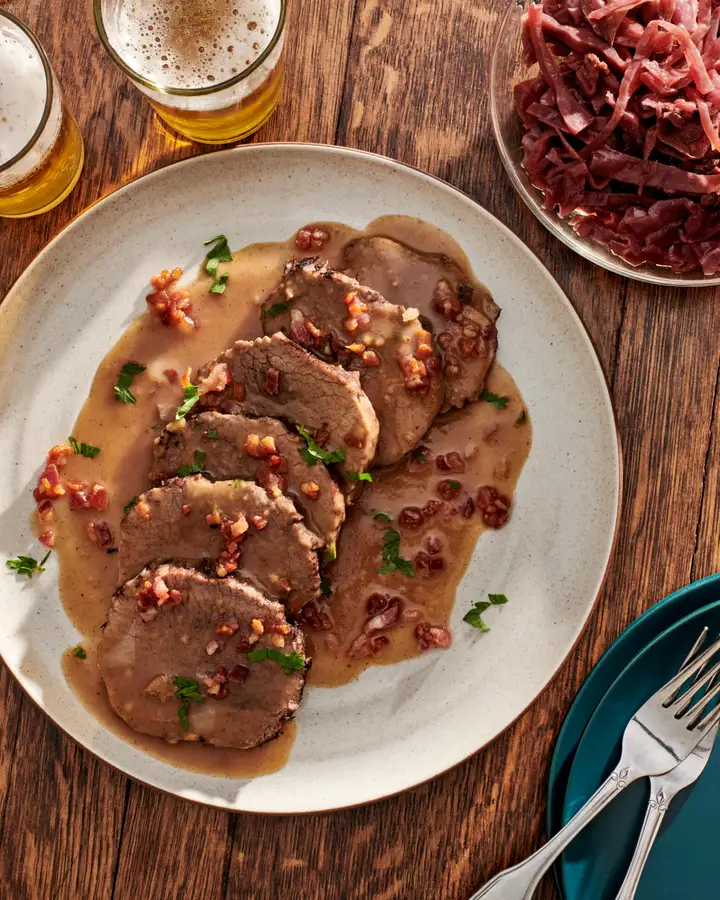
Sauerbraten
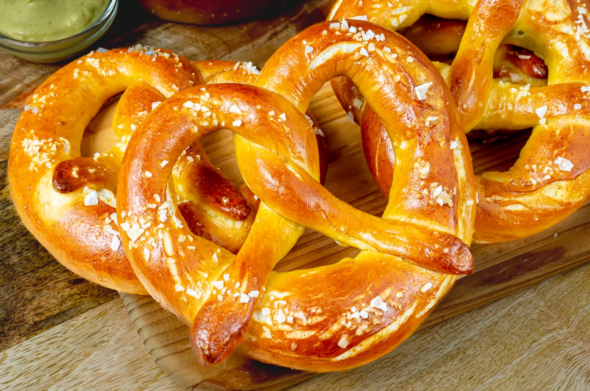
Bretzel
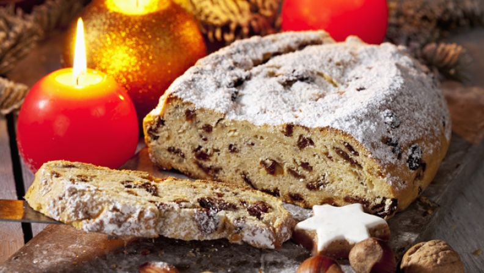
Stollen
La vestimenta típica se llama Tracht que es un término para referirse a los trajes típicos de los países de habla alemana especialmente en regiones de Varsovia y Austria y se compone por:
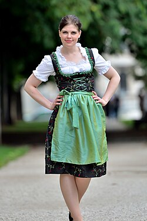
Dirndl
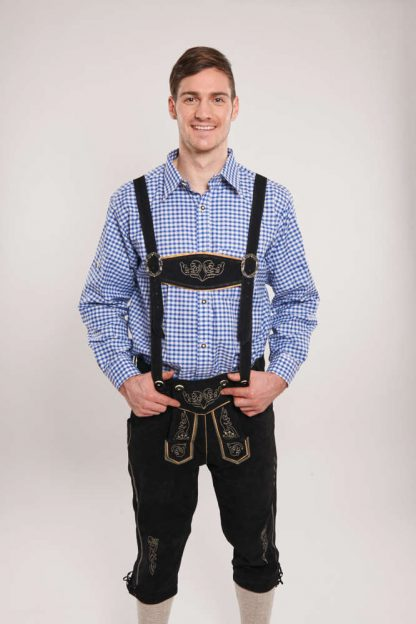
Lederhosen
Esta vestimenta no es tomada como si fuera un disfraz sino como trajes que se visten con orgullo cultural.
El Tracht se usa durante fiestas como el Oktoberfest, bodas, eventos familiares y religiosos.